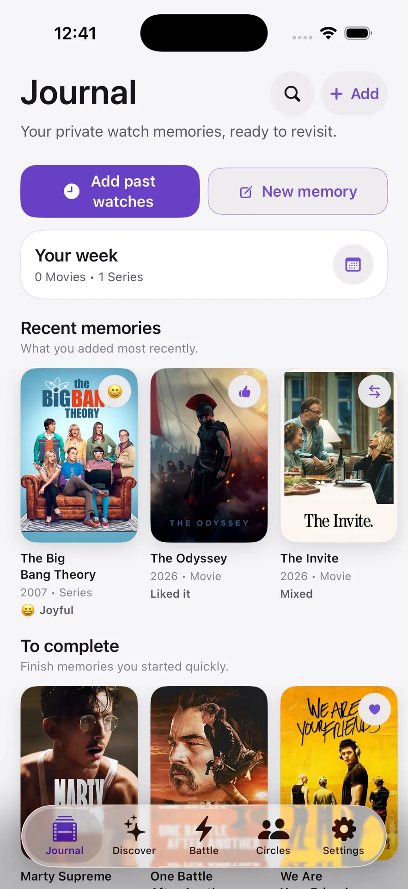
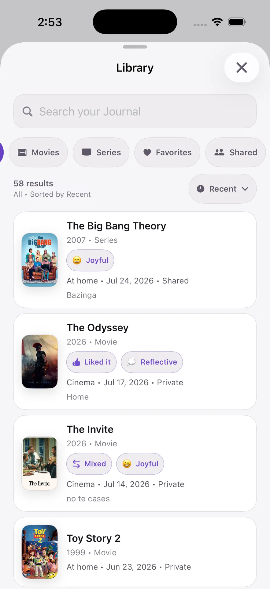
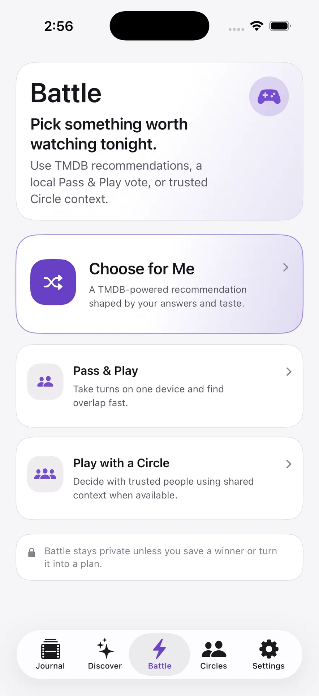
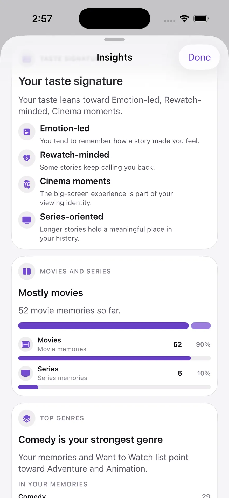

CloseCut for iPhone
CloseCut for iPhoneNow on the App Store
More than ratings.
A private place for the movies and series you watch—remember what stayed with you, build your personal history, and make the next choice easier.
CloseCut 1.0 is available now on iPhone through the App Store.

A quieter place for your taste
A rating remembers the score.
A Journal remembers you.
Most movie apps focus on public ratings, feeds, and reviews. CloseCut focuses on what a title meant to you and what you want to remember.
01
Personal memory
Keep the mood, moment, and meaning.
Entry Detail keeps the personal context behind a title together: memory, key moment, verdict, feelings, watch context, and the signals you chose to save.
- Moods, notes and context
- Preserve the moment with Entry Detail
- Local-first personal history


02
Choose the momentRecently, this year, a long time ago, or an unknown
date.
Keep it lightweightA date and quick reaction are enough to start the
memory.
Return when it mattersComplete notes, quotes, moods, and context
later.
Quick Add
Add past watches in seconds.
Your history did not start when you installed the app. Search a movie or series, choose an approximate date, add a quick reaction if you want, and complete the memory later.
03
Find and revisit
Search, filter, and return to any memory.
Library brings Journal entries into one searchable view with media, favorite, shared, and recency filters.


04
Understand the pickSee the taste signals that brought a title
forward.
One option at a timeNo endless recommendation feed to keep
scrolling.
Stay in controlSave it, mark it watched, dismiss it, or ask for
another.
QuickPick
One thoughtful pick, with a reason.
QuickPick uses explainable, rule-based signals from your Journal to narrow the choice.
QuickPick requires at least three eligible Journal entries and becomes more useful as your history grows.
05
Decide your way
Choose in the way that fits the moment.
Use guided choices, take turns with Pass & Play on one device, or decide with shared Circle context.
- Choose for Me
- Pass & Play
- Play with a Circle


07
Insights
See the shape of your taste.
Discover patterns across what you remember, rewatch, and choose.
Insights appear as your history grows. Some breakdowns can appear from three active entries where supported. Taste Signature requires at least five active entries and enough supported signals.
08
Local-first personal historySupported personal data is written locally
first and may synchronize through Firebase when available.
Explicit Circle sharingA personal memory is shared only when you choose the
entry and its Circle.
No advertising-based trackingCloseCut does not use ads or
advertising-based tracking.
Controls remain yoursManage sharing, export supported content, sign out, or
request account deletion from the app.
Privacy
Private by default.
Your personal memories stay private unless you explicitly choose to share them with a Circle.
Also in CloseCut
More features you’ll find
- Want to Watch
- Cinema context
- Awards Picks
- Wrap summaries
- Shareable cards
- Calendar export
- Light, Dark and System
- English, Spanish, Brazilian Portuguese
Built for
Built for iPhone and iPad
Available in English, Spanish, and Brazilian Portuguese. Light, Dark, and System appearance supported.
CloseCut 1.0 is available now
Make your watch history worth remembering.
Get CloseCut on the App Store for iPhone.
Download on the App StoreAvailable for iPhone.FAQ
Frequently asked questions
Is CloseCut available on the App Store?
Yes. CloseCut 1.0 is available now on iPhone through the App Store.
What can a Circle see?
Only content explicitly shared with that Circle and Circle-scoped activity.
Membership does not expose the private Journal.
Does CloseCut use AI recommendations?
No. QuickPick currently uses explainable, rule-based signals from your history.
Does CloseCut show where a title is streaming?
No. CloseCut uses TMDB for title metadata but does not currently provide streaming availability.
What devices and languages are supported?
CloseCut is built for iPhone and iPad and supports English, Spanish, and Brazilian Portuguese.
When does QuickPick become available?
QuickPick requires at least three eligible Journal entries and becomes more useful as
your history grows.
When do Insights appear?
Some insights can appear after several active entries. Taste Signature requires at
least five active entries and enough supported signals.
Is Battle multiplayer?
No. Pass & Play works on one device, while Circle-based choices use shared Circle
context. It is not remote multiplayer.
Can CloseCut export or share content?
You can explicitly share generated cards through the iOS share sheet and export
supported Watch Plans to a calendar. The selected external service handles the exported content under
its own policies.